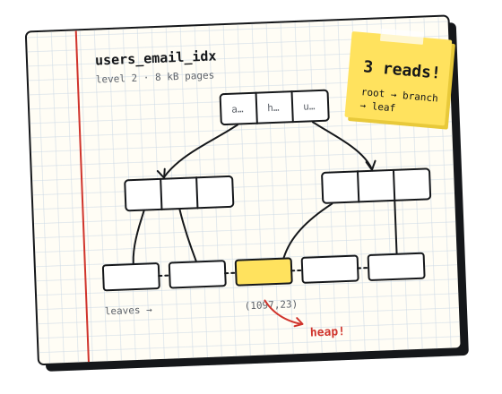

Postgres from the inside · part 3
Vacuum, seen from the page
Dead tuples, the free space map and why VACUUM almost never gives disk space back.
the notebook of imke vos
I’m Imke, a backend engineer in Rotterdam. This is where I write down what I learn about databases, build tools and the bugs in between, usually with a terminal still open.
now: reading the Postgres source, one page at a time. What else

Postgres from the inside · part 3
Dead tuples, the free space map and why VACUUM almost never gives disk space back.
Open an index with pageinspect, walk from the root to a single row and see what an index actually promises.
A test that only failed after 5 pm, and the one-line date parse behind it.
From the parser to the write-ahead log: following one row into a Postgres table.
Topological order, cycles that explain themselves and running independent steps in parallel.
A good error says what happened, where, and what to do next. Everything else is decoration.
3 parts · 27 min
A slow walk through the storage layer, with pageinspect open the whole time: heap pages, B-tree indexes and vacuum.
3 parts · 23 min
Writing a small, correct build tool in Rust, one idea per post: why, content hashing and the dependency graph.
2 parts · 16 min
The parts of CSS I wish someone had explained to me in terms I already knew: precedence rules and layout algorithms.
newsletter
One email when a post goes up, about twice a month. Plain text, no tracking pixels, one-click unsubscribe. Prefer a feed reader? There’s RSS.